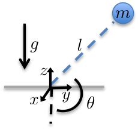
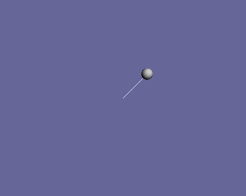

Now let’s create a trep model of a simple single-link pendulum, simulate a discrete trajectory, and then visualize the results.
Let us begin by importing some standard modules including the trep module into python.
import math
from math import pi
import numpy as np
import trep
from trep import tx, ty, tz, rx, ry, rz
The line that should be noted here is highlighted above. tx, ty, tz, rx, ry, rz are trep methods that make it very easy to create new frames of reference for your system. They are used in the next section.
Let us now build the pendulum system that corresponds to the figure below.
m = 1.0 # Mass of pendulum
l = 1.0 # Length of pendulum
q0 = 3./4.*pi # Initial configuration of pendulum
t0 = 0.0 # Initial time
tf = 5.0 # Final time
dt = 0.1 # Timestep
system = trep.System() # Initialize system
frames = [
rx('theta', name="pendulumShoulder"), [
tz(-l, name="pendulumArm", mass=m)]]
system.import_frames(frames) # Add frames
The first lines of code here define system parameters. Then you can see that a new trep system is created.
The frames of the system are defined using the methods that were imported above. The Frame documentation has a through explanation of how to create and use these frames. The first frame is created to rotate around its parent’s (system.world_frame) X axis. It is defined by the configuration parameter theta and is named pendulumShoulder. The second frame is a translation of fixed amount (-l) along its parent’s (pendulumShoulder) Z axis and is given a mass of m. The system.import_frames method is used to create the frames from the list of frame definations in frames.
Let us now add forces, potentials, and damping into the system.
trep.potentials.Gravity(system, (0, 0, -9.8)) # Add gravity
trep.forces.Damping(system, 1.0) # Add damping
trep.forces.ConfigForce(system, 'theta', 'theta-torque') # Add input
Gravity can work in any direction relative to the world frame. Here it is assigned to be parallel to the Z axis and have a value of \(-9.8 ~m/s^2\). Trep can handle other types of potentials as well. See the Potential documentation for information on the trep.Potential base class, and see the trep.potentials documentation for a list of the potentials that have been implemented.
Damping is applied to the entire system with the trep.forces.Damping method. Note that trep can also apply unique damping values to individual configurations or set default values for all configurations – see the Damping documentation.
An input is configured for the system by adding a configuration force with the trep.forces.ConfigForce method. Specifically this adds an input to the configuration variable theta (the configuration variable for the pendulumShoulder frame) with the name theta-torque. See Forces for a list of the available force types, and trep.Force for the documentation on the base class.
Trep uses variational integrators to simulate the dynamics of mechanical systems.
mvi = trep.MidpointVI(system)
mvi.initialize_from_configs(t0, np.array([q0]), t0+dt, np.array([q0]))
Here a new variational integrator object mvi is created using our system instance of a trep.System. It is then initialized with a set of two time points and configurations using trep.MidpointVI.initialize_from_configs. The first two arguments are the current time and configuration and the next two are the next time and configuration. Trep calculates the discrete generalized momentum from these two pairs. You can also initialize the variational integrator with a single time, configuration, and momentum using the trep.MidpointVI.initialize_from_state method.
Here is a list of all the properties and methods of the variational integrator.
>>> mvi.
mvi.calc_f mvi.nk mvi.q2_dk2dk2
mvi.calc_p2 mvi.nq mvi.q2_dp1
mvi.discrete_fm2 mvi.nu mvi.q2_dp1dk2
mvi.initialize_from_configs mvi.p1 mvi.q2_dp1dp1
mvi.initialize_from_state mvi.p2 mvi.q2_dp1du1
mvi.lambda1 mvi.p2_dk2 mvi.q2_dq1
mvi.lambda1_dk2 mvi.p2_dk2dk2 mvi.q2_dq1dk2
mvi.lambda1_dk2dk2 mvi.p2_dp1 mvi.q2_dq1dp1
mvi.lambda1_dp1 mvi.p2_dp1dk2 mvi.q2_dq1dq1
mvi.lambda1_dp1dk2 mvi.p2_dp1dp1 mvi.q2_dq1du1
mvi.lambda1_dp1dp1 mvi.p2_dp1du1 mvi.q2_du1
mvi.lambda1_dp1du1 mvi.p2_dq1 mvi.q2_du1dk2
mvi.lambda1_dq1 mvi.p2_dq1dk2 mvi.q2_du1du1
mvi.lambda1_dq1dk2 mvi.p2_dq1dp1 mvi.set_midpoint
mvi.lambda1_dq1dp1 mvi.p2_dq1dq1 mvi.step
mvi.lambda1_dq1dq1 mvi.p2_dq1du1 mvi.system
mvi.lambda1_dq1du1 mvi.p2_du1 mvi.t1
mvi.lambda1_du1 mvi.p2_du1dk2 mvi.t2
mvi.lambda1_du1dk2 mvi.p2_du1du1 mvi.tolerance
mvi.lambda1_du1du1 mvi.q1 mvi.u1
mvi.nc mvi.q2 mvi.v2
mvi.nd mvi.q2_dk2
Let us now simulate this system forward in time.
T = [mvi.t1] # List to hold time values
Q = [mvi.q1] # List to hold configuration values
while mvi.t1 < tf:
mvi.step(mvi.t2+dt, [0.0]) # Step the system forward by one time step
T.append(mvi.t1)
Q.append(mvi.q1)
The system is simulated forward in time using a simple while loop. First, two lists are initialized to hold all of the time values and configuration values for the simulation. Next, it enters a loop that says to continue until the variational integrator reaches the final time. In each interation of the loop the system is integrated forward by one time step. Then the new values are append to the storage vectors.
The variational integrator object has attributes for times, configurations, and discrete generalized momenta at both time points of the current integration (e.g. mvi.t1, mvi.q1, and mvi.p1). The trep.MidpointVI.step method integrates the system forward from the current time endpoint to the time given the in the first argument. The second argument specifies the input over that time period. You can see above that the input is set to zero.
Let us use trep’s visualization tools to see the system in action.
trep.visual.visualize_3d([ trep.visual.VisualItem3D(system, T, Q) ])
Finally let’s create a visualization of the system being simulated. Only the system object, the list of times, and the list of configurations are needed to create the visualization.
The output that you should see on your screen is shown below.
Note: This is an animated gif of captured screen shots. So it is slower and lower-quality than what you will see.
Below is the entire script used in this section of the tutorial.
1 2 3 4 5 6 7 8 9 10 11 12 13 14 15 16 17 18 19 20 21 22 23 24 25 26 27 28 29 30 31 32 33 34 35 36 37 38 39 40 41 42 43 | # pendulumSystem.py
# Import necessary Python modules
import math
from math import pi
import numpy as np
import trep
from trep import tx, ty, tz, rx, ry, rz
# Build a pendulum system
m = 1.0 # Mass of pendulum
l = 1.0 # Length of pendulum
q0 = 3./4.*pi # Initial configuration of pendulum
t0 = 0.0 # Initial time
tf = 5.0 # Final time
dt = 0.1 # Timestep
system = trep.System() # Initialize system
frames = [
rx('theta', name="pendulumShoulder"), [
tz(-l, name="pendulumArm", mass=m)]]
system.import_frames(frames) # Add frames
# Add forces to the system
trep.potentials.Gravity(system, (0, 0, -9.8)) # Add gravity
trep.forces.Damping(system, 1.0) # Add damping
trep.forces.ConfigForce(system, 'theta', 'theta-torque') # Add input
# Create and initialize the variational integrator
mvi = trep.MidpointVI(system)
mvi.initialize_from_configs(t0, np.array([q0]), t0+dt, np.array([q0]))
# Simulate the system forward
T = [mvi.t1] # List to hold time values
Q = [mvi.q1] # List to hold configuration values
while mvi.t1 < tf:
mvi.step(mvi.t2+dt, [0.0]) # Step the system forward by one time step
T.append(mvi.t1)
Q.append(mvi.q1)
# Visualize the system in action
trep.visual.visualize_3d([ trep.visual.VisualItem3D(system, T, Q) ])
|